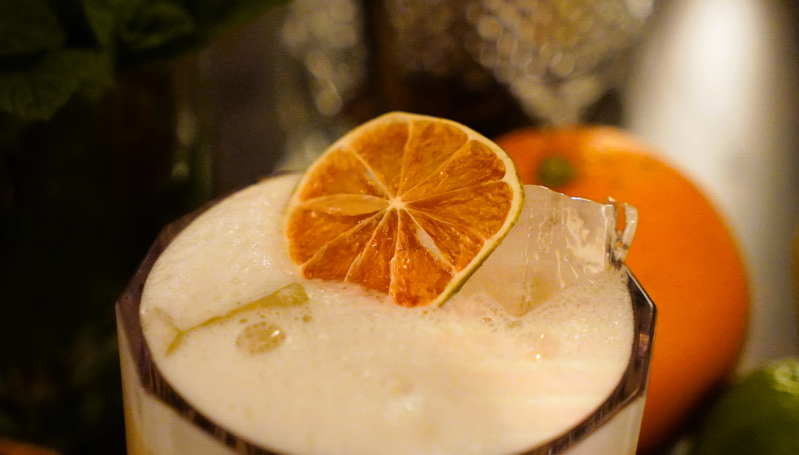

Cocktails
Kein Cocktail gefunden.
Whiskey Sour
Fresh & Zesty
ca. 16 % vol
Inhalt
Schritt für Schritt

Batches / Mengen
Cocktail auswählen und automatisch auf Liter hochrechnen
Auswahl
Zielmenge: 3,0 L
Batch-Mengen
Hinweise
Whiskey Sour
Automatische Hochrechnung
